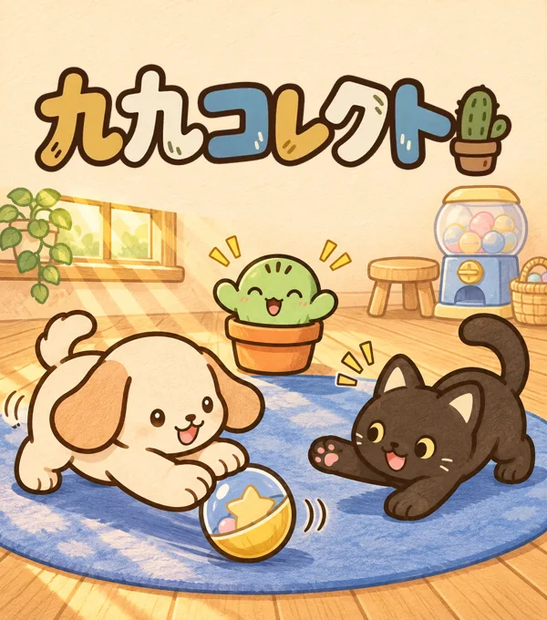

さんすう九九・かけざん
九九コレクト
九九をおぼえて、なかまをあつめよう！
「ににんがし」を聞いて、声に出してみよう。
もんだいでポイントをためたら、ガチャでなかまをおむかえ！
- 小学2年生ごろから
- 1〜9の段
- むりょう・たてむき

どんなことを まなべる？
九九の言い方を おぼえる
1の段から9の段まで、練習したい段を選びます。音声を聞き、九九のリズムに合わせて声に出してみましょう。
穴うめで たしかめる
「ににんが ○○」のような穴うめで、覚えた九九を確認します。ポイントをためて仲間を迎え、おへやに置いて楽しめます。
あそびかた
九九をきく
1の段から9の段まで、九九の言い方を聞いて声に出します。
もんだいにこたえる
九九の穴うめでポイントをためます。
なかまをおむかえ
初回のガチャはポイント不要。次からは練習でためたポイントで引けます。集めたなかまはおへやに置けます。
ゲームの がめん
ガチャで迎えたなかまと過ごすおへや。
九九の言い方を聞いて、声に出して覚えます。
九九の穴うめに答えて、ポイントをためます。
保護者の方へ：学習内容と使い方
九九コレクトは、九九の暗唱を練習し、穴うめ問題で確認する無料ブラウザゲームです。小学2年生ごろを目安に、習った段の復習や、言い方に慣れる練習に使えます。仲間集めが次の練習への楽しみになります。
| 学べること | 1〜9の段の九九の言い方と答え。書き取りや文章題の練習は含みません。 |
|---|---|
| 練習の例 | 2×2＝4を「ににんがし」と聞いて声に出し、穴うめでも確かめます。 |
| 遊びの仕組み | 問題でポイントをためてガチャで仲間を集め、おへやに置いて楽しめます。 |
| 利用環境 | スマートフォン・タブレット・パソコンのブラウザ。縦向き・無料・インストール不要です。 |
| 記録の保存 | 進みぐあいや仲間は端末のブラウザに保存されます。別端末への自動同期はありません。 |
家庭での れんしゅうのヒント
はじめは、学校で習った段や言いやすい段を一つ選びます。音声のあとに声に出し、慣れたら穴うめで確かめてみてください。つまずいた九九だけもう一度聞くなど、短く区切って取り組めます。
九九を唱えることに加え、「2個ずつのお皿が2枚で4個」のように、身近な物でも確かめると、かけ算の意味を話し合えます。
よくある しつもん
むりょうで あそべる？
無料で遊べます。ページを開けば、インストールせずに始められます。
おとを出せない場所でも あそべる？
穴うめ問題にも取り組めます。九九の言い方を音声で聞く練習は、音を出せる場所で利用してください。
とじても なかまは のこる？
同じ端末・同じブラウザで再開してください。サイトデータを消すと記録が消えることがあります。別の端末やブラウザとは自動共有されません。
かけ算の文章題も れんしゅうできる？
このゲームは九九の暗唱と穴うめの練習が中心です。文章題や、かけ算の式を立てる問題は含みません。
情報の取り扱いは、プライバシー方針をご確認ください。
ほかの ゲームも みてみよう
九九をおぼえて、なかまをあつめよう。
ゲームいちらんへ →